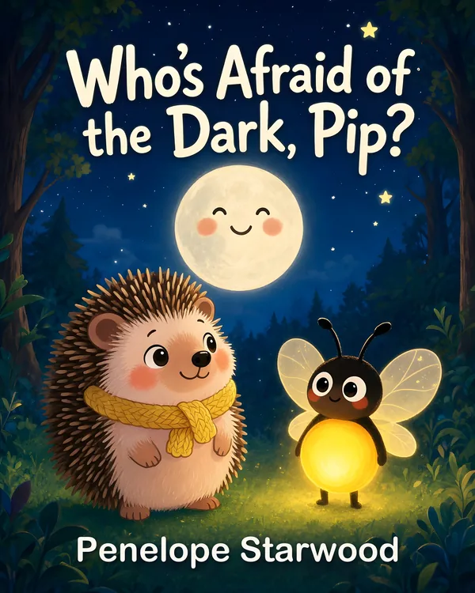

Picture book · ages 3 to 6
Who's Afraid of the Dark, Pip?
One small step at a time, the dark gets a little less scary.
When the sun slips behind the hills, little Pip the hedgehog pulls his yellow scarf tight and hides under his blanket of moss. The dark is just too big!
Then a tiny light twinkles at the door. Glow the firefly has something to show him: a smiling ladybug on a leaf, the moon shining through an old oak, a shiny pebble in the grass and a whole sky full of stars.
A gentle bedtime story about finding courage one small step at a time, for every little one who is afraid of the dark.
Where to buy
-
English editionWho's Afraid of the Dark, Pip?Paperback and Kindle ebookBuy on Amazon.com